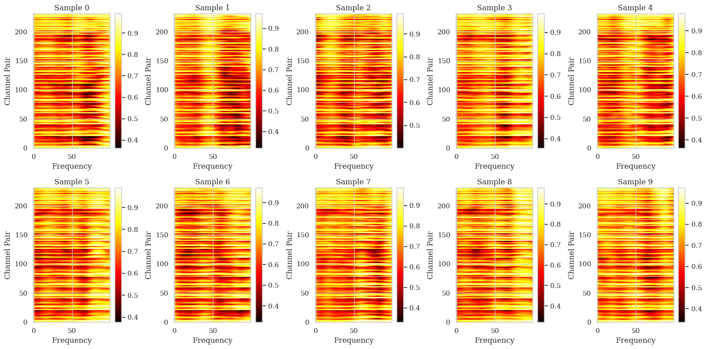

Accuracy regression (0.80 → 0.71) traced to a fixed receptive field
Debug plots were built of the raw time series, wavelet transforms, and coherence array for a single electrode pair. Initial coherence values were 0.8–1.0 almost everywhere, inconsistent with the expected sparse, discriminative map. Cause: wavelet coefficients were resampled from ~1000 points to 200 before coherence was computed, smearing structure and producing high coherence even in frequency bands with near-zero power in the raw transforms.

Coherence was recomputed at native resolution, without resampling, producing a correct sparse map. Cone-of-influence masking was added, excluding coherence values outside each wavelet's valid time-frequency support. Event extraction was then run through the training pipeline.
Regression
After combining native-resolution coherence, the COI mask, and a caching optimization for the wavelet transforms, subject-1 accuracy dropped from ~0.80 to ~0.76, then to 0.71–0.72 on further runs. Coherence/phase thresholds, the COI mask, smoothing kernel size, frequency range, and raw event density were tested individually — none moved the result; all variants landed around 0.76.
Root cause
The channel signal encoder used two stacked convolutional layers with a fixed 17-sample receptive field, independent of sampling rate — about 68ms at 250Hz, shorter than one mu-band cycle (8–12Hz, 83–125ms). The encoder could not resolve a full oscillation.
Fix
A dilation parameter was added to the channel encoder (dilation=5; receptive field 81 samples, ~324ms, ~3.2 mu-band cycles), widening the real-time window without resampling, discarding signal, or adding parameters. Accuracy recovered to parity (~0.80, subject 1) with coherence, the COI mask, and the raw signal all at native resolution.
Result
Native-resolution correctness fixes did not improve accuracy beyond the earlier pipeline's ceiling; they recovered parity. A larger smoothing kernel was tested afterward: 0.8008 vs. 0.7991, within noise. The fixes were accuracy-neutral — real bugs, corrected, at no accuracy cost, but not a source of improvement on their own.